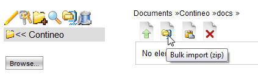

Showing Folder Contents |
LogicalDOC saves documents in folders.
The basic idea is to use similar concepts as the ones that uses your hard disk to work with your folders.
By selecting a folder in the tree shown on the left size of the screen, the documents that are part of it come to vision.
A folder can contain documents and sub-folders.
In the upper side you can see the general controls.
From left to right, they are: Create document, Import zip archive, Cut and Cancel.
In the lower part the documents contained in the selected folder are shown.
Every document has a Tool menu associated with it. To enable it you only have to Right click on the document's title.
Delete documents
The erasure function is much simple and fast.
It is necessary to select documents that you desire to cancel using the checkbox that is on the left side of the document name.
There is also an option to select all the documents in a folder by clicking the checkbox icon "Select all" placed in the head of the table on the left.
Then, click on the Cancel icon. The system will ask for a precaution confirmation, select "OK" in order to proceed
to the erasure.
| The cancelled documents are not restorable
neither from the customer nor from the Administrator. During the erasure, the system eliminates all the information and the files connected to documents to eliminate. |
|
Cut and paste
This feature allows you to carry documents from one folder to another within the system, without having to download and reimport them.
The operativity resumes the concepts expressed by "Delete documents".
The operation is executed in 4 steps:
- First select the documents you want to "Cut"
- Click on Cut icon (after that, the icon changes to Paste)
- Select the destination folder from the folder's tree on the left (the current path is shown on the right side of the screen)
- Paste documents in the folder by clicking the "Paste" icon.
2. Highlighted the Cut icon

4. Highlighted the Paste icon